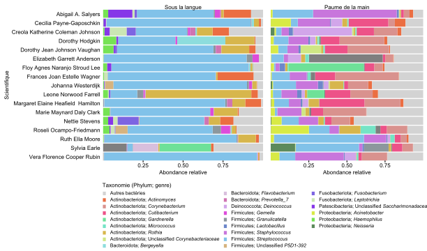
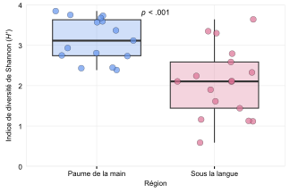
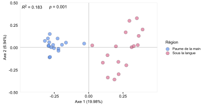

Chapitre 6 Statistiques
Importer les libraires que nous devons utiliser
Code
library(vegan) # Plusieurs fonctions utiles en écologie
library(tidyverse) # Manipulation de tableaux de données
library(forcats) # Pour transformer des variables en facteurs avec un ordre précis "fct_relevel"
library(dplyr) # Manipulation de tableaux de données
library(tidyr) # Manipulation de tableaux de données
library(randomcoloR) # Générer palette de couleur
library(ggplot2) # Graphique
library(ggtext) # Utiliser le format markdown dans les graphiques (Genre en italique)
library(ggpubr) # Pour combiner des graphiques
library(export) # Pour enregistrer des graphiques des bonne qualité
library(reshape2) # Formatter des matrices à partir de tableaux
library(glue) # Copier-coller du texte ensemble 6.1 Thème pour les graphiques
Je génère mon propre thème pour les différents graphiques à générer dans lequel je spécifie par exemple la taille du texte, la taille des lignes des axes, etc…
Code
text_size = 8
custom_theme = function(){
theme_classic() %+replace%
theme(
#text elements
plot.title = element_text(size = text_size), #set font size
plot.subtitle = element_text(size = text_size), #font size
plot.caption = element_text(size = text_size), #right align
axis.title = element_text(size = text_size), #font size
axis.text = element_text(size = text_size), #font size
axis.text.x = element_text(size = text_size),
axis.text.y = element_text(size = text_size, hjust = 1, margin = margin(r = 0.15, unit = "cm")),
axis.line = element_blank(),
axis.ticks.y = element_blank(),
legend.text = element_markdown(size = text_size - 1),
legend.title = element_text(size = text_size, hjust = 0),
legend.position = "bottom",
legend.key.size = unit(0.2, "cm"),
strip.text = element_text(size = text_size),
strip.background = element_blank(),
panel.border = element_blank(),
panel.grid.minor = element_blank(),
panel.grid.major = element_blank()
)
}Importer le tableau de données
6.2 Abondances relatives des principaux genres
Code
# Transformer les valeurs en abondance relative pour chaque des genres pour chaque région
df_agg = df %>%
group_by(Sample, Scientifique, Region, Phylum, Genus) %>%
summarise(Abundance_Genus = sum(Abundance)) %>%
group_by(Sample) %>%
mutate(Relative_abundance = Abundance_Genus / sum(Abundance_Genus)) %>%
mutate(Genus2 = paste("*", Genus, "*", sep = "")) %>%
mutate(Genus2 = gsub("\\*Unclassified_", "Unclassified *", Genus2)) %>%
mutate(Taxonomie = paste(Phylum, Genus2, sep = "; "))
# Valider que la somme est maintenant de 1
validate = df_agg %>%
group_by(Sample) %>%
summarise(Sum = sum(Relative_abundance))
# All good
# Identifer les 15 genres qui sont les plus abondant dans la main et sous la langue.
df_top = df_agg %>%
group_by(Region, Taxonomie) %>%
summarise(mean_relabund = mean(Relative_abundance)) %>%
slice_max(mean_relabund, n = 15)
# Générer une palette de couleur
# custom_colors = distinctColorPalette(k = length(unique(df_top$Taxonomie)))
# color_names = unique(df_top$Taxonomie)
# my_palette = setNames(custom_colors, color_names)
my_palette = readRDS( "data/colors_abondance_relative.Rds")
my_palette[["Autres bactéries"]] = "lightgrey"
#saveRDS(my_palette, "data/colors_abondance_relative.Rds")
top_L = subset(df_top, Region == "Sous la langue")
top_M = subset(df_top, Region == "Paume de la main")
df_L = df_agg %>%
filter(Region == "Sous la langue") %>%
mutate(Taxonomie = ifelse(Taxonomie %in% top_L$Taxonomie, Taxonomie, "Autres bactéries")) %>%
group_by(Region, Scientifique, Taxonomie) %>%
summarise(Relative_abundance = sum(Relative_abundance )) %>%
mutate(Taxonomie = fct_relevel(Taxonomie, "Autres bactéries"))
df_M = df_agg %>%
filter(Region == "Paume de la main") %>%
mutate(Taxonomie = ifelse(Taxonomie %in% top_M$Taxonomie, Taxonomie, "Autres bactéries")) %>%
group_by(Region, Scientifique, Taxonomie) %>%
summarise(Relative_abundance = sum(Relative_abundance )) %>%
mutate(Taxonomie = fct_relevel(Taxonomie, "Autres bactéries"))
# Générer les graphiques
graph_L = ggplot(df_L, aes(y = Scientifique, x = Relative_abundance, fill = Taxonomie)) +
geom_bar(position="stack", stat="identity") +
xlab("Abondance relative") +
ylab("Scientifique") +
ggtitle("Sous la langue") +
custom_theme() +
theme(legend.position = "none") +
scale_fill_manual(values = my_palette) +
scale_x_continuous(expand = c(0,0), limits = c(0,1), breaks = c(0.25, 0.50, 0.75)) +
scale_y_discrete(expand = c(0,0), limits = rev)
graph_M = ggplot(df_M, aes(y = Scientifique, x = Relative_abundance, fill = Taxonomie)) +
geom_bar(position="stack", stat="identity") +
xlab("Abondance relative") +
ggtitle("Paume de la main") +
custom_theme() +
theme(axis.text.y = element_blank(),
axis.ticks.y = element_blank(),
axis.title.y = element_blank(),
legend.position = "none") +
scale_fill_manual(values = my_palette) +
scale_x_continuous(expand = c(0,0), limits = c(0,1), breaks = c(0.25, 0.50, 0.75)) +
scale_y_discrete(expand = c(0,0), limits = rev)
graph_LM = ggarrange(graph_L, graph_M, widths = c(1,0.6))
# Générer le graphique pour la légende
df_ML = as.data.frame(rbind(df_M, df_L))
df_legend = df_ML %>%
mutate(Taxonomie = as.character(Taxonomie)) %>%
arrange(Taxonomie) %>%
mutate(Taxonomie = fct_relevel(Taxonomie, "Autres bactéries"))
graph_legende = ggplot(df_legend, aes(y = Scientifique, x = Relative_abundance, fill = Taxonomie)) +
geom_bar(position="stack", stat="identity") +
guides(fill = guide_legend(nrow = 9)) +
custom_theme() +
scale_fill_manual(values = my_palette, name = "Taxonomie (Phylum; genre)") +
theme(legend.title.position = "top",
legend.title = element_text(hjust = 0),
legend.justification = "left",
legend.key.spacing.y = unit(0.1, "cm"))
gglegend = as_ggplot(get_legend(graph_legende))
blank = ggplot() + theme_void()
graph_final = ggarrange(graph_LM, ggarrange(blank, gglegend, ncol = 2, widths = c(0.3, 1)), nrow = 2, heights = c(0.5,0.2))
graph2svg(x = graph_final, file= "data/abondance_relative.svg", font = "Arial", width = 8.5, height = 5, bg = "transparent")
6.3 Indice de Shannon
Calculer l’indice de diversité par échantillon
Code
# Générer une matrice à partir de notre tableau
df_abondance = dcast(df, Sample ~ OTU, value.var = "Abundance")
row.names(df_abondance) = df_abondance$Sample
df_asv = df_abondance[-1]
# Calculer l'indice de Shannon
df_shannon = as.data.frame(diversity(df_asv, index = "shannon"))
df_shannon$Sample = row.names(df_shannon)
names(df_shannon)[1] = "Shannon"
meta_data = df %>%
select(-c(OTU, Type, Abundance, Scientifique, Kingdom, Phylum, Class, Order, Family, Genus)) %>%
unique()
row.names(meta_data) = meta_data$Sample
df_graphique = merge(df_shannon, meta_data, by = "Sample")Maintenant que nous avons les valeurs de diversité (indice de Shannon) nous aimerions comparer ces valeurs en fonction de la région échantillonnée (langue et main). Pour ce faire, nous pouvons utiliser un test de t de student, mais nous devons avant nous assurer que nos données respectent les postulats de ce test (distribution normale et variance similaire)
Code
# Est ce que les données ont une distibution gausienne (normale) ?
valeur_shapiro=list() # créer une liste vide
# Réaliser le test de shapiro pour chacune des régions
for (region in unique(df_graphique$Region)){
sample = subset(df_graphique, Region == region)
ok = shapiro.test(sample$Shannon)
valeur_shapiro = append(valeur_shapiro,ok$p.value)
}
data.frame(valeur_shapiro)
# Pour nos deux régions (langue et main) la distribution des valeurs de Shannon suit une distribution normale
# (p est supérieur à 0.05)
# Est ce que la variance est similaire ?
# Nous pouvons facilement tester la variance avec la fonction var.test
var.test(Shannon ~ Region, df_graphique,
alternative = "two.sided")
# Comparer la moyenne
t.test(Shannon ~ Region, data = df_graphique)
# t = 4.6192, df = 28.954, p-value = 7.326e-05Nos données respectent les postulats du test de t de Student, nous pouvons donc procéder à l’analyse.
Code
graphique_shannon = ggplot(df_graphique, aes(x = Region, y = Shannon, fill = Region)) +
custom_theme() +
theme(panel.border = element_rect(colour = "#E8E8E8", fill = NA, linewidth = 0.5),
panel.grid.major = element_line(linewidth = 0.25, linetype = 'solid', colour = "#E8E8E8")) +
geom_boxplot(alpha = 0.3, outlier.shape = NA) +
geom_jitter(aes(fill = Region),alpha = 0.7, shape = 21, color = "black", stroke = 0.2, size = 3, ) +
scale_fill_manual(values = c("cornflowerblue","palevioletred")) +
scale_color_manual(values = c("cornflowerblue","palevioletred")) +
labs(x = "Région", y = expression(paste("Indice de diversité de Shannon (", italic("H'"), ")"))) +
scale_y_continuous(limits = c(0,4), expand = c(0,0)) +
annotate(geom ="text", x = 1.5, y = 3.8, label = expression(paste(italic("p")," < .001")), size = 3) +
theme(legend.position = "none")
graph2svg(x = graphique_shannon, file= "data/shannon.svg", font = "Arial", width = 4.5, height = 3, bg = "transparent")
6.4 Ordination (PCoA)
Code
# Transformer les données d'abondance relative avec l'indice d'Hellinger
asv_hellinger = decostand(df_asv, method = "hellinger")
# Calculer l'indice de distance de Bray-Curtis entre chaque échantillon
dist = vegdist(asv_hellinger, method = "bray")
# Générer l'ordination avec la fonction R cmdscale
PCOA = cmdscale(dist, eig=TRUE, add=TRUE)
# On extrait les coordonnées des points
position = PCOA$points
# Changer le nom des colonnes
colnames(position) = c("Axe.1", "Axe.2")
# Extraire le pourcentage de variation expliqué par les deux premiers axes
percent_explained = 100 * PCOA$eig / sum(PCOA$eig)
# Arrondir
reduced_percent = format(round(percent_explained[1:2], digits = 2), nsmall = 1, trim = TRUE)
# Générer des beaux titres pour les axes
pretty_labs = c(glue("Axe 1 ({reduced_percent[1]}%)"), glue("Axe 2 ({reduced_percent[2]}%)"))
# Combiner les résultats de la PCOA avec les méta données
df = merge(position, meta_data, by = 0) PERMANOVA et betadisper
Code
# Calculer la dispersion (distance au centroïde)
# S'assurer que les échantillons sont ordonnés dans le même order entre chacun des tabeaux de donnnées
meta_data = meta_data %>%
arrange(Sample)
dispr = vegan::betadisper(dist, group = meta_data$Region)
boxplot(dispr, main = "", xlab = "")
# ANOVA sur la dispersion (p = 0.417)
permutest(dispr)
# ANOVA sur la distance en fonction des région (p = 0.001)
adns = adonis2(dist ~ meta_data$Region)
valR = paste("*R*^2^", round(adns$R2[1],4), sep = " = ")
valP = paste("*p*", adns$`Pr(>F)`[1], sep = " = ")Générer le graphique
Code
graph_pcoa = ggplot(df, aes(x = Axe.1, y = Axe.2, fill = Region)) +
custom_theme() +
theme(panel.border = element_rect(colour = "#E8E8E8", fill = NA, linewidth = 0.5),
legend.position = "right") +
geom_point(aes(fill = Region),alpha = 0.7, shape = 21, color = "black", stroke = 0.2, size = 3, ) +
labs(x = pretty_labs[1], y = pretty_labs[2]) +
scale_y_continuous(limits = c(-0.50,0.50), expand = c(0,0)) +
scale_x_continuous(limits = c(-0.5,0.5), expand = c(0,0), breaks = c(-0.25,0,0.25)) +
geom_hline(yintercept = 0,linewidth = 0.1) +
geom_vline(xintercept = 0, linewidth = 0.1) +
scale_fill_manual(values = c("cornflowerblue","palevioletred"), name = "Région") +
annotate("richtext", x = -0.50, y = 0.45, label = valR, hjust = 0, fill = NA, label.color = NA, size = 3) +
annotate("richtext", x = -0.30, y = 0.45, label = valP, hjust = 0, fill = NA, label.color = NA, size = 3)
graph2svg(x = graph_pcoa, file= "data/PCoA.svg", font = "Arial", width = 5.75, height = 3, bg = "transparent")